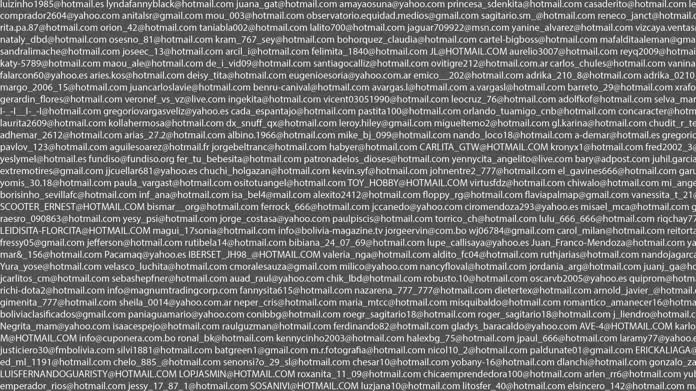
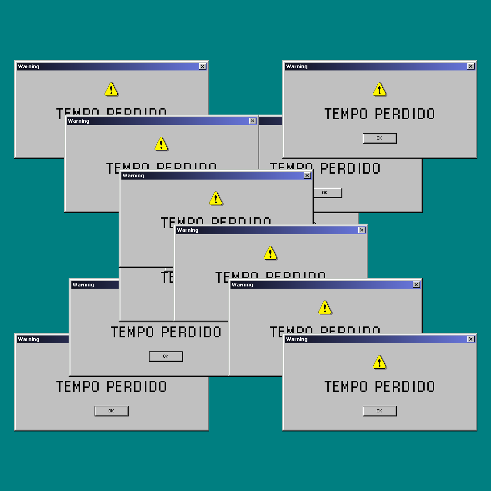
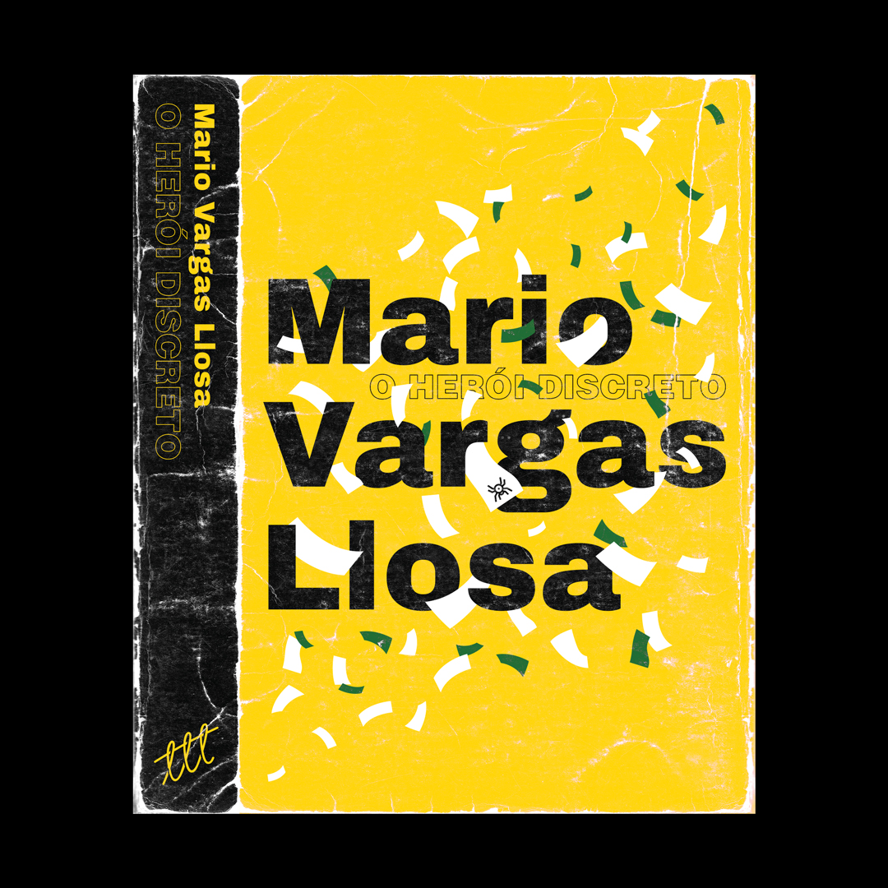
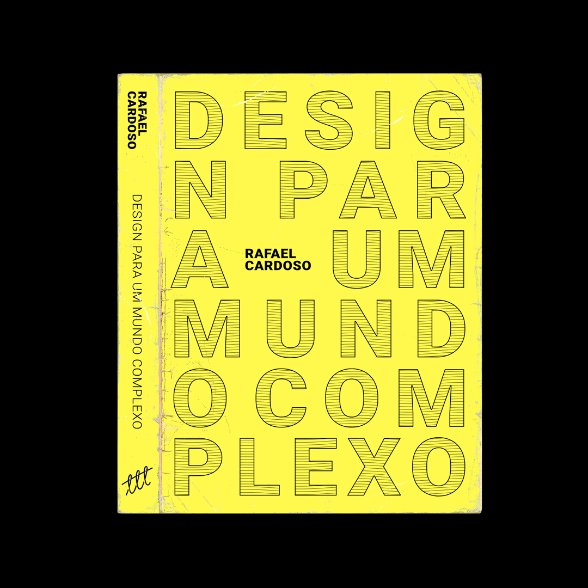

This Website / Portfolio
— A showcase
> Abstract
This portfolio was created with the intent to showcase stand-alone personal works and bigger projects that were in fact executed. Both segments deal with the creative and technical characteristics of my works, along with my interests and abilities. All works and projects where entirely created by myself.
> Made With
Photoshop, Illustrator, Premiere, HTML, CSS, JavaScript, Jquery.
> Keywords
Portfolio, visual design, web design, UI/UX, interactive design.
> Concept
This entire website was hand-coded because the intent was to create an web page distinct from standard wordpress templates and boostrap models. With this in mind, the core ideas of this portfolio were:
— Use of simples geometric shapes;
— Application of a simple color scheme;
— To direct the user attention to images and to the written content;
— Use images and typography to dictate the layout and structure;
— Avoid the use of unnecessary elements like shadows, gradients, icons, heavy and slow animations, and overly complex elements;
— To maintain a simple and minimalist portfolio that evolves as the user searches for more information.
Each project displayed on the “works” page is a selection of projects I had the privilege to create and that I am the proudest of. Each work has an extensive collection of images and texts to further complement in the understanding of each project, as well as links, tools and skills used.
The circular images that appear both on “Home” and the “About” page are a selections of visuals I developed solely for the pleasure of creating them. The images appear accordingly with the mouse movement, without any preference or defined order whatsoever. They are displayed below along with a link to the original publication and a brief explanation of what the design is about.

Place here an image with different formats and pages from this website.
> Design/Visuals
All these images were created with simple concepts and ideas in mind. They all are visual experiments of ideas and thoughts, or, sometimes, some kind of obsession about a certain subject that led to a mental image, and consequently to a design. All of these experiments can be found on my instagram account @yagomurakami. Click on each image to display other complementary images and text.





> Book Cover Project
Besides the stand-alone designs, I also started in the beginning of 2019 the project to redesign the cover of every book I read. The intent is to stimulate my reading habits and to exercise the application of concept through visual design. The idea is to redesign the book cover and spine only after reading the entire book. This gave me the liberty to choose what part of the story or concept to focus and work on.



